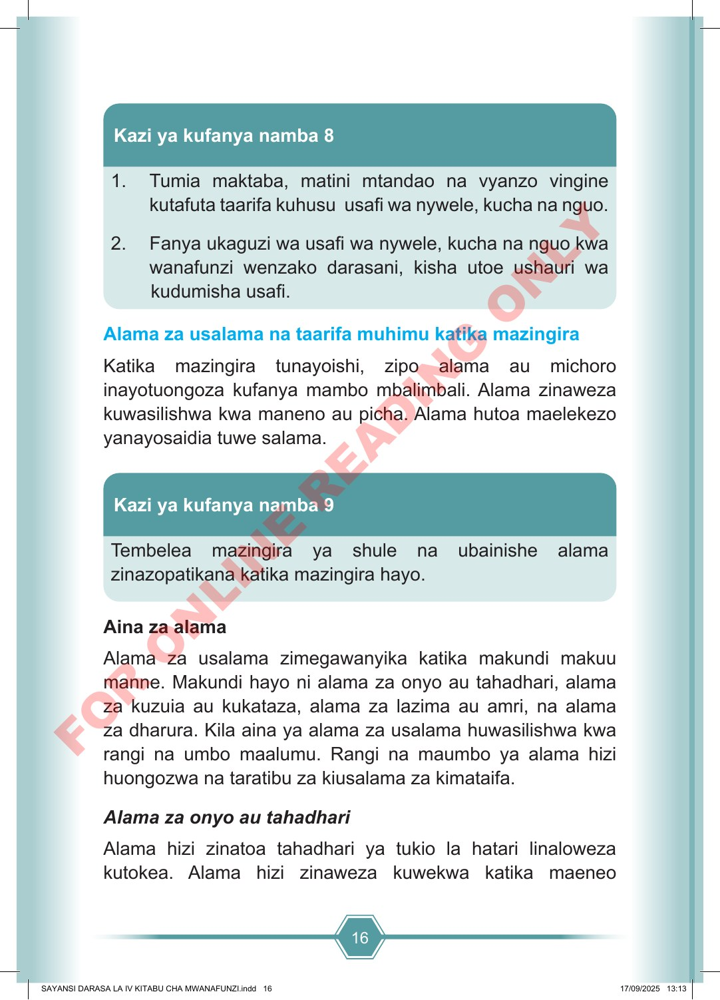

16 1. Tumia maktaba, matini mtandao na vyanzo vingine kutafuta taarifa kuhusu usafi wa nywele, kucha na nguo. 2. Fanya ukaguzi wa usafi wa nywele, kucha na nguo kwa wanafunzi wenzako darasani, kisha utoe ushauri wa kudumisha usafi. Kazi ya kufanya namba 8 Alama za usalama na taarifa muhimu katika mazingira Katika mazingira tunayoishi, zipo alama au michoro inayotuongoza kufanya mambo mbalimbali. Alama zinaweza kuwasilishwa kwa maneno au picha. Alama hutoa maelekezo yanayosaidia tuwe salama. Tembelea mazingira ya shule na ubainishe alama zinazopatikana katika mazingira hayo. Kazi ya kufanya namba 9 Aina za alama Alama za usalama zimegawanyika katika makundi makuu manne. Makundi hayo ni alama za onyo au tahadhari, alama za kuzuia au kukataza, alama za lazima au amri, na alama za dharura. Kila aina ya alama za usalama huwasilishwa kwa rangi na umbo maalumu. Rangi na maumbo ya alama hizi huongozwa na taratibu za kiusalama za kimataifa. Alama za onyo au tahadhari Alama hizi zinatoa tahadhari ya tukio la hatari linaloweza kutokea. Alama hizi zinaweza kuwekwa katika maeneo SAYANSI DARASA LA IV KITABU CHA MWANAFUNZI.indd 16 SAYANSI DARASA LA IV KITABU CHA MWANAFUNZI.indd 16 17/09/2025 13:13 17/09/2025 13:13 F O R O N L I N E R E A D I N G O N L Y